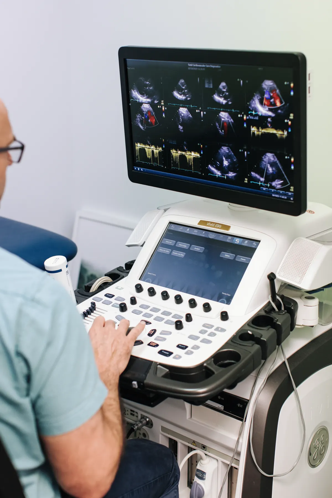

Cardiac imaging
Detailed pictures of your heart's structure and function to guide diagnosis.

- Procedures & tests
- 05
- Specialists
- Clinics
- 07
- Bookings
- 03 9070 6116
Procedures & tests
Select a procedure to read what it involves, how to prepare and what to expect.
01EchocardiogramEcho is a sophisticated ultrasound of the heart. We are required to access your chest for the test. If you have hair on your chest, we may need to shave some off to connect you to an ECG. We then connect the…
Echo is a sophisticated ultrasound of the heart. We are required to access your chest for the test. If you have hair on your chest, we may need to shave some off to connect you to an ECG. We then connect the ECG to allow us to capture the pictures appropriately. An ultrasound probe (and gel on the skin) is then used to acquire ultrasound pictures of the heart.
How to Prepare
- The cardiac sonographer may ask you questions about your cardiac condition.
- Please bring your referral (if you were given one) to the test and give it to the cardiac sonographer.
- We will need to access your chest to perform the heart ultrasound – please wear adequate clothing to allow us to do so.
- Please do not apply any creams or moisturisers to the chest prior to the test.
How Long Does it Take?
Anticipate a total of approximately 45 minutes including preparation time.
Why Do We Do It?
At Total Cardiovascular Care, we have experienced cardiac sonographers, reporting cardiologists who are specialised in cardiac echo, and top-of-the-line equipment.
Echo is used to assess the heart muscle function, the valvular function and the pressures in the heart. We are also able to take various measurements of the heart structures and aorta.
Potential Complications
None – besides an allergy to the ECG dots used as part of the test.
02Stress EchocardiogramAn exercise stress test using a sophisticated cardiac echo machine. We initially attached you to an ECG (we may need to shave hair off your chest to do so). We then take detailed ultrasound pictures of the…
An exercise stress test using a sophisticated cardiac echo machine. We initially attached you to an ECG (we may need to shave hair off your chest to do so). We then take detailed ultrasound pictures of the heart before exercise. After the initial cardiac ultrasound, you will be asked to exercise on a treadmill which usually involves a maximum of walking quickly up a hill – the degree of exercise is graded to suit the person’s ability. Please note for ladies, that you will unfortunately not be able to wear a bra, we will make every effort to cover you with a gown provided. After the treadmill, we repeat a limited cardiac ultrasound to compare these images with those taken at rest. In our Bass Coast locations, we use a bike as the form of exercise instead of a treadmill.
We do not require you to be particularly fit – the test is designed to suit the individual’s needs.
After the test, the cardiologist will sit down with you to discuss the results and any additional follow up that is required.
How to Prepare
• Please bring your referral (if you were given one) to the test and give it to a staff member.
• Adequate footwear for walking quickly on a treadmill
• Although we will provide gowns to cover the chest while exercising – ideally wear shorts / exercise pants from the waist down.
• Be aware we will need access to your chest to perform the ECG component and to take the ultrasound pictures of the heart.
• Please do not apply any creams/moisturisers to the chest prior to the test.
How Long Does It Take?
Anticipate a total of approximately 45 minutes including preparation time, the test itself and a follow up discussion afterwards about the result. The treadmill/exercise component usually only takes up to approximately 8 minutes.
Why Do We Do It?
Stress echo is a sophisticated test. At Total Cardiovascular Care we have experienced cardiac sonographers, cardiologists who are specialised in stress echo testing and top of the line equipment.
The test is often utilised to assess for the cause of symptoms like chest pain, breathlessness and dizzy spells. The primary focus is to assess for severe heart (coronary) artery narrowings not by seeing them directly but by assessing the different areas of the heart muscle’s response to exercise. All areas of the heart muscle should increase their pumping function and if they don’t – this may suggest a severe narrowing in the heart artery supplying that particular section of the heart muscle. Besides the heart pumping function, stress echo can also assess for the heart valvular function as well as the pressures in the heart before and after exercise.
Pontential Complications
The test itself carries no risk more than pushing yourself physically at home. The quoted rate of a major complication, including heart attack, is 1 in 10,000.
03Dobutamine Stress EchocardiogramA dobutamine stress echo is a specialised heart ultrasound test. We first attach you to an ECG (shaving some chest hair if needed) and place a drip in your arm. Detailed ultrasound pictures of the heart are…
What is it?
A dobutamine stress echo is a specialised heart ultrasound test. We first attach you to an ECG (shaving some chest hair if needed) and place a drip in your arm. Detailed ultrasound pictures of the heart are taken before giving dobutamine, a medication that makes your heart pump faster and stronger. Once your heart rate is fast enough, we repeat a limited ultrasound to compare the images.
This test is usually performed for patients who cannot exercise on a treadmill.
After the test, the cardiologist will review the results with you and discuss any necessary follow-up.
How to Prepare
- Bring your referral (if provided) and give it to a staff member.
- We will need access to your chest for the ECG and ultrasound.
- Do not apply any creams or moisturisers to your chest before the test.
- You may be asked to stop some medications before the test.
How Long Does it Take?
Expect about 45 minutes in total, including preparation, the test itself, and discussion of results afterwards.
Why Do We Do It?
At Total Cardiovascular Care, experienced sonographers and cardiologists use top-of-the-line equipment for stress echo testing.
The test helps assess:
- Causes of symptoms such as chest pain, breathlessness, and dizziness.
- Severe heart (coronary) artery narrowings by observing the heart muscle’s response to stress.
- Heart pumping function, valve function, and pressure changes before and after stress.
If parts of the heart muscle do not increase their pumping function under stress, this may suggest a significant narrowing in the supplying artery.
Potential Complications
This is a very low-risk procedure, similar to a standard stress test.
- Common (3 in 1,000): Chest pain (managed by stopping the test and giving medication)
- Fluid in the lungs (managed by stopping the test and giving medication)
- Abnormal heart rhythm (arrhythmia) – may require treatment or stop of the test
- Less common: Heart attack (~1 in 2,500 people)
- Death (~1 in 10,000 people)
Important
Please inform staff before the test if you have:
- A history of recent heart attack
- A tear in the aorta
- Recent fluid or clots in the lungs
- Severe valve disease
- Irregular heartbeat, palpitations, or increased chest pain
You will also be asked to provide a list of your current medications.
04CT Coronary AngiogramA computerized tomography (CT) coronary angiogram is an imaging test that looks at the arteries that supply blood to your heart. It may be used to diagnose the cause of chest pain or other symptoms.
A computerized tomography (CT) coronary angiogram is an imaging test that looks at the arteries that supply blood to your heart. It may be used to diagnose the cause of chest pain or other symptoms.
A CT coronary angiogram uses a powerful X-ray machine to produce images of your heart and blood vessels. The test is noninvasive and doesn’t require recovery time. Coronary CT angiograms are increasingly used for people with a variety of heart conditions.
By contrast, a traditional (non-CT) coronary angiogram requires threading a catheter through your groin or arm to your heart or arteries. If you already have known coronary artery disease, your doctor may recommend the traditional procedure, as treatment can also be done at the same time.
Why is it done?
A coronary CT angiogram can check for various conditions, but is mainly used to detect narrowed or blocked arteries in your heart (coronary artery disease). If your test suggests heart disease, you and your doctor can discuss treatment options.
Risks
- You’ll be exposed to some radiation during the test. The amount depends on the type of CT machine, but we use a very fast scanner with minimal radiation exposure.
- The risk of developing cancer from a CT angiogram is not known, but thought to be small.
- You should not have this test if you are pregnant, due to potential harm to your unborn child.
- Some people may have an allergic reaction to the dye used in the procedure. If you’re concerned, discuss this with your doctor.
How to Prepare
Food and Medication
- Don’t eat anything for about 4 hours before your test.
- You may drink water, but avoid caffeinated drinks for 12 hours before, as they can increase heart rate and blur images.
- If you are allergic to the contrast dye, your doctor may prescribe steroids 12 hours before the procedure to reduce the risk of reaction.
Clothing and Personal Items
- You’ll need to remove clothing above your waist, as well as jewelry and glasses.
- You will change into a hospital gown.
What to Expect
Before the Procedure
- You may be given a beta blocker to slow your heart rate for clearer images. Because of the fast scanner we use, medication may not be necessary.
- You may also be given nitroglycerin to widen your arteries.
- If you are allergic to contrast material, you may be given additional medication to lower the risk of reaction.
During the Procedure
- A technician will insert an IV in your hand or arm to inject the contrast dye.
- The actual scanning takes only 5–10 seconds, but the whole process may last up to an hour.
- Electrodes will be placed on your chest to record your heart rate.
- You’ll lie on a table that slides into a short tunnel-like machine. You will need to stay still and hold your breath briefly.
- If you feel claustrophobic, ask your doctor in advance about medication to help you relax.
- The technician operates the scanner from a separate room, but you’ll be able to communicate through an intercom.
After the Procedure
- You can return to normal activities immediately.
- You should be able to drive yourself home or to work.
- Drink plenty of water to help flush the dye from your system.
- Results are usually available soon after the test, and your cardiologist will discuss them with you.
Results
Your doctor will explain whether you have heart disease, your level of risk, and what steps or treatments may be needed to maintain your heart health.
05Transoesophageal EchocardiogramTransoesophageal echo or “TOE” is a highly specialised heart ultrasound performed via a probe inserted into the stomach / oesophagus. The test is performed with an anaesthetist who will provide sedation – not…
Transoesophageal echo or “TOE” is a highly specialised heart ultrasound performed via a probe inserted into the stomach / oesophagus. The test is performed with an anaesthetist who will provide sedation – not a “general anaesthetic” but enough medication to make you sleepy and not remember the test itself.
How to Prepare
- Do not having anything to eat or drink (unless to take medication) for at least 6 hours prior to the test.
- Please take all regular medications (including blood thinners) including the morning of the test with a small sip of water.
- You will need someone to pick you up after the test and to be with you for the rest of that day / evening.
How Long Does It Take?
Total time in the hospital is in the order of 2-3 hours which includes preparation time and recovery time. The “TOE” itself usually takes about 20 minutes, however, depends on the complexity of the study being performed.
Why Do We Do It?
A “TOE” is performed only by cardiologists specialised in cardiac imaging. The benefit of a TOE as opposed to a standard cardiac echo performed via the chest wall is that the ultrasound does not have to penetrate the chest structures and lungs to see the heart – hence the detail of the image via TOE is greater. TOE is most commonly used to precisely image the heart valves and to look for clot in certain heart chambers.
Potential Complications
Major complications including perforation of the oesophagus are extremely rare (in the order of 1:10,000). The most common issue is a sore throat which should settle over the next 48 hours. Occasionally people can experience side effects of the anaesthetic medications.
Specialists in cardiac imaging
All doctors →Other areas of care
All services →Take control of your heart health today

Book online
Request an appointment in a few minutes. Our team will be in touch to confirm a time and clinic.
Call us
03 9070 6116Best for urgent appointments. Main rooms open Mon–Fri, 9am–5pm.
Visit us
07 clinicsFrom Highett to Inverloch, with main rooms at 11 Hastings Road, Frankston.
See all locations →